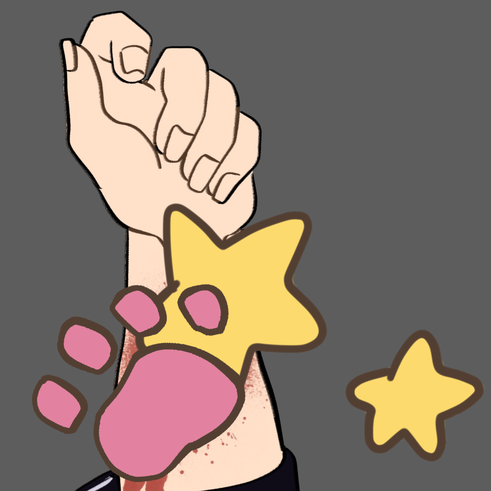
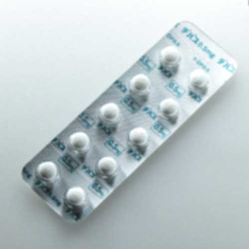

. @addicted_u2 · 11월 1일
우와아아
온갖 감정이 엉망진창이야…
답변에 따라서는, 너를 죽여버릴지도 몰라
. @addicted_u2 · 9월 18일
괴로워
죽고 싶어서 죽고 싶어져서 그어버렸어

. @addicted_u2 · 9월 1일
#이상한_사람과_연결되고_싶다
. @addicted_u2 · 8월 8일
친구랑 같이 있었구나(｡>ᴗ<｡)
걱정했잖아! 즐거웠던 것 같아서 다행이야✨
나 이외의 놈이랑 데이트였다면
너를 죽이고 나도 죽을까 생각했어 ㅎㅎ
. @addicted_u2 · 8월 8일
데파스 먹었더니 좀 진정됐어
그래도 괴로워

. @addicted_u2 · 8월 8일
괴로워, 죽고 싶어
. @addicted_u2 · 8월 8일
발신기 확인
헤에, 오다이바 쪽까지 갔구나…
나 이외의 사람이랑
. @addicted_u2 · 8월 8일
하?
왜? 저기, 누구랑 같이 있는 거야?